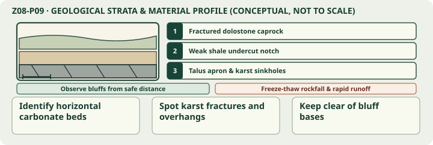

Z08-P09 · Rocks, minerals and materials · New manuscript
Paleozoic Limestone, Dolostone and Karst Bluff Hazards
Identify layered carbonate bluffs and sinkhole karst terrain in southeastern Minnesota and respect sudden rockfall and drainage hazards.
When it applies · Driftless Area, Mississippi River bluffs, and Paleozoic carbonate valleys.
Equipment · Geologic map, binoculars for safe remote bluff inspection, notebook.

Actions
- Recognize Paleozoic limestone and dolostone by horizontal bedding, fossil fragments, and softer hardness easily scratched by a steel nail.[R01, R04, R16]
- Treat solution cavities, vertical joints, and overhanging carbonate ledges as active collapse hazards prone to sudden freeze-thaw rockfall.[R13, R16]
- Recognize that karst fissures channel contaminated surface runoff rapidly underground, making spring water visually clear yet microbially unsafe.[R16, W03]
Failure recognition · Camping beneath overhanging limestone bluffs or drinking untreated karst spring water exposes parties to rockfall and rapid pathogen transport.[R16, W03]
Verify · Camp and observation stations sit well clear of talus slopes and undercut ledges, and karst springs receive full microbial water treatment.[R16, W03]
Stop or change course · Stop approaching bluff bases, sea caves, or sinkhole rims during spring thaw, heavy rain, or visible fresh talus debris.[R13, R16]
Evidence and editorial notes
- R01 · Minnesota Geological Survey (UMN) · Minnesota Geological Survey Maps and Regional Geology (Current web edition)
- Section: Geologic provinces and bedrock mapping · Conditions: Minnesota and Upper Midwest regional bedrock/glacial terrain
Support: Minnesota spans Precambrian Canadian Shield igneous/metamorphic rock, Midcontinent Rift volcanics, Paleozoic sedimentary strata, and Pleistocene glacial drift.
Limitations: Surficial glacial till frequently conceals underlying bedrock; local geologic maps and field verification remain necessary. · Conflicting evidence: Generalized state maps do not confirm outcrop-scale rock composition.
Editorial note: Bounds Z08 regional geology framing. · Specialist reviewer: Geologist and regional survey reviewer
Primary source · checked 2026-11-25
Current assessment · A04-R01 (2026-11-25) · Bounded support confirmed from an alternate source (A04): MGS describes Precambrian basement, partial marine strata cover, rift rocks and widespread Quaternary glacial deposits. This is regional stratigraphy and provides no site identification. Limits: Specialist review PENDING (Geologist and regional survey reviewer); publication HOLD. All release decisions pending. - R04 · USGS · Collecting Rocks: Rock Classes and Mineral Property Basics (USGS GIP)
- Section: Hardness, luster, streak, and fracture vs cleavage · Conditions: Non-destructive mineral observation with simple field cues
Support: Scratch hardness, unglazed streak, luster, and fracture-versus-cleavage patterns narrow candidate mineral groups.
Limitations: Field scratch checks cannot establish chemical purity, trace heavy metals, or absence of hazardous fibers. · Conflicting evidence: Color alone is unreliable across quartz, calcite, and feldspar varieties.
Editorial note: Core Z08 mineral screening basis. · Specialist reviewer: Mineralogist
Primary source · checked 2026-11-25
Current assessment · A04-R04 (2026-11-25) · Bounded support confirmed from an alternate source (A04): The properties are identification clues. A record of an existing surface is preferred and a destructive field test cannot establish use safety. Limits: Specialist review PENDING (Mineralogist); publication HOLD. All release decisions pending. - R13 · National Park Service · Rocks and Minerals Geological Overview (Current web edition)
- Section: Rocks and Minerals overview · Conditions: Unrated stones near a fire or during thermal cycling
Support: Use agency-approved fire facilities and keep people away from cracking or shifting material.
Limitations: Editorial avoidance. The cited geology overview does not establish a safe rock type, moisture test or heating threshold. · Conflicting evidence: Conditions are recorded in the A03 audit.
Editorial note: Reinforces Z03/Z08 wet-rock spalling stop. · Specialist reviewer: Geologist and fire safety reviewer
Primary source · checked 2026-11-25
Current assessment · A04-R13 (2026-11-25) · Open: support partial or missing (A04): No general authorization of heated rock or context for cracking. Retain hazard avoidance as editorial and use site fire orders and material review for prescriptions. Limits: Specialist review PENDING (Geologist and fire safety reviewer); publication HOLD. All release decisions pending. - R16 · Minnesota DNR · Rocks and Minerals of Minnesota Educational Guide (Current web edition)
- Section: Sedimentary limestone, sandstone, and shale permeability · Conditions: Southeastern Minnesota karst, bluff, and river-valley sedimentary strata
Support: Sandstone, limestone, and shale differ sharply in cementation, porosity, and fissility, governing weathering and cliff instability.
Limitations: Karst bluffs and fractured shales shed rockfall unpredictably; visual inspection cannot certify slope or load stability. · Conflicting evidence: None noted.
Editorial note: Covers Upper Midwest sedimentary rock hazards. · Specialist reviewer: Engineering geologist
Primary source · checked 2026-11-25 - W03 · CDC · Collecting Rainwater and Your Health (current web edition)
- Section: Rainwater might not be safe for household use · Conditions: Collected rain, including apparently clean runoff
Support: Germs and chemicals can enter from air, roof, gutters or storage. Prefer safe drinking water for ingestion.
Limitations: Site-specific roof and atmospheric chemistry vary; no universal roof-wash formula assumed. · Conflicting evidence: None; aligns with CDC potable-first hierarchy.
Editorial note: Separates catchment from raw storage and microbial treatment. · Specialist reviewer: Drinking-water safety and environmental health
Primary source · checked 2026-11-24
Source lineage · New manuscript (Z08 P16 regional formations) · Classification · New manuscript.